In this tutorial you will:
Add a content-based router to your route
Configure the content-based router
Add a log endpoint to each output branch of the content-based router
Add a Set Header EIP after each log endpoint
Add an Otherwise branch to the content-based router
To complete this tutorial you will need the CBRroute project you created in To Create a New Route.
To add and configure a content-based router for your route:
In Project Explorer, double-click
CBRroute/src/main/resources/OSGI-INF/blueprint/blueprint.xmlto open your CBRroute project.On the canvas, select the To_Others node and then select the trash can above and to the right to delete it.
In the Palette, open the Routing drawer and drag a Choice (
 ) pattern to the canvas and drop it in the
Route_route1 container.
) pattern to the canvas and drop it in the
Route_route1 container.The Route_route1 container expands to accommodate the Choice_choice1 node.
In the Route_route1 container, select the From_from1 node and drag its connector arrow over the Choice_choice1 node, then release it:
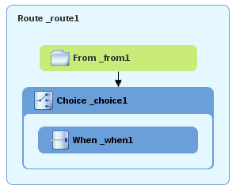In the Properties editor,
_choice1appears in the Id field: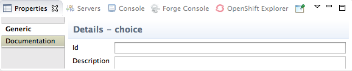Leave the Id field as is.
From the Routing drawer, drag a When (
 ) pattern to the canvas and drop it on the
Choice_choice1 node: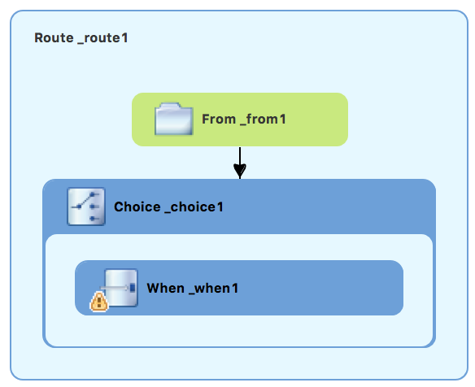
) pattern to the canvas and drop it on the
Choice_choice1 node: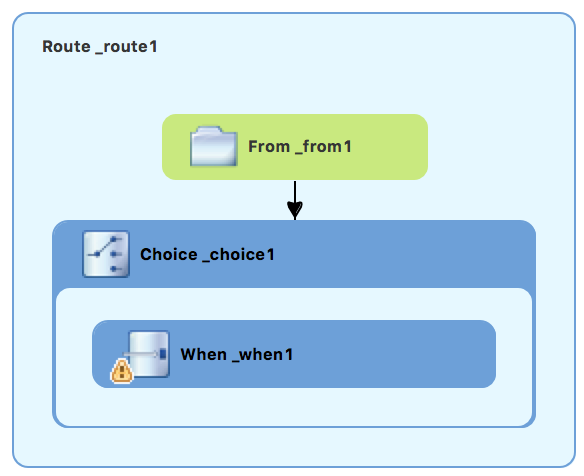The Choice_choice1 container expands to accommodate the When_when1 node. The
 decorating the When_when1 node
indicates that one or more required property values must be set.
decorating the When_when1 node
indicates that one or more required property values must be set. ![[Note]](imagesdb/note.png)
Note The tooling prevents you from dropping a pattern at an invalid drop point in a Route container.
On the canvas, select the When_when1 node, to open its properties in the Properties editor:
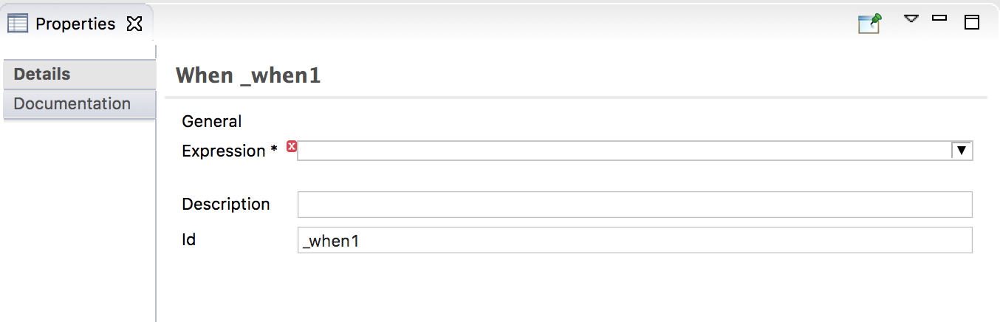Click the
 button in the Language field to open
the list of available languages, and select
: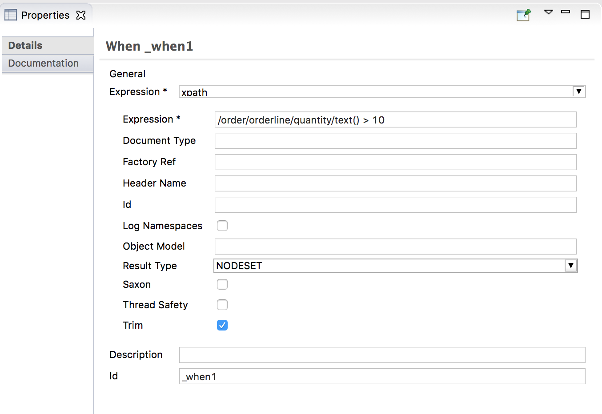
button in the Language field to open
the list of available languages, and select
: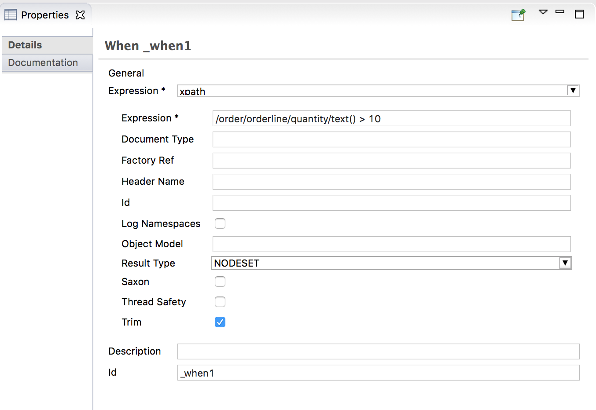Note Once you select the expression Language, the Properties editor displays its properties in an indented list directly below the Language field. The Id property in this list sets the ID of the expression. The Id property following the Description field sets the ID of the When node.
In the Expression field, enter
/order/orderline/quantity/text() > /order/orderline/maxAllowed/text().This expression determines which messages will transit this path in the route.
Leave each of the remaining properties as is.
Enabling Trim removes any leading or trailing white spaces and line breaks from the message.
On the menu bar, click > to save the routing context file.
Click the Source tab to review the routing context in Source view:
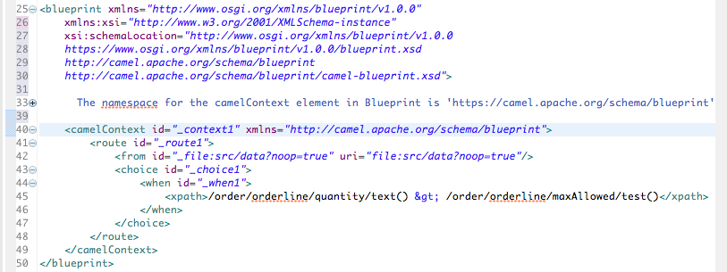
To add logging to your route:
In the Palette, open the Components drawer and select a (
 ) component.
) component.Drag the component to the canvas and drop it on the When_when1 node:

The When_when1 container expands to accommodate the Log_log1 node.
On the canvas, select the Log_log1 node to open its properties in the Properties editor.
In the Message field, enter
quantity requested exceeds the maximum allowed - contact customer: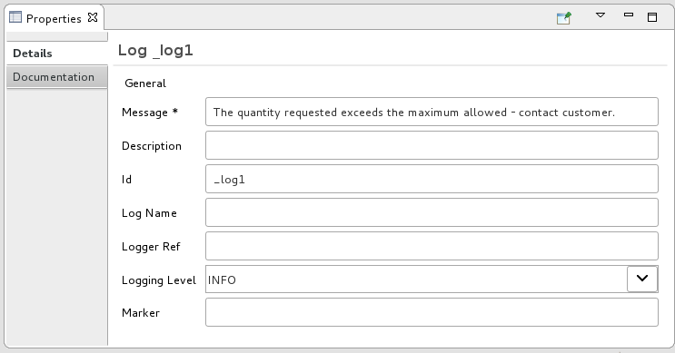Leave each of the remaining properties as is.
Note In the Fuse Integration perspective's Messages view, the tooling inserts the contents of the log node's Id field in the
Trace Node Idcolumn for message instances, when tracing is enabled on the route (see To Trace a Message Through a Route). In the Console, it adds the contents of the log node's Message field to the log data whenever the route runs.On the menu bar, click > to save the routing context file.
To add and configure message headers:
In the Palette, open the Transformation drawer and select a Set Header (
 ) pattern.
) pattern.Drag the Set Header pattern to the canvas and drop it in the When_when1 container.
The When_when1 container expands to accommodate the SetHeader_setHeader1 node.
On the canvas, select the Log_log1 node and drag its connector arrow over the SetHeader_setHeader1 node, and then release it:
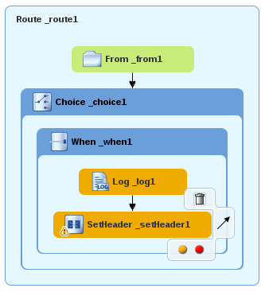On the canvas, select the SetHeader_setHeader1 node to open its properties in the Properties editor:
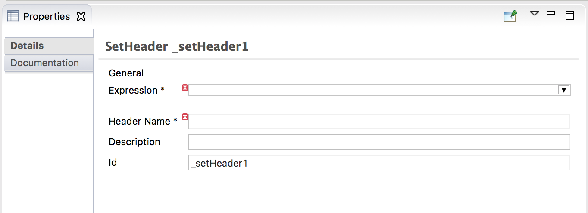Click the
button in the Language field to open
the list of available languages, and select
: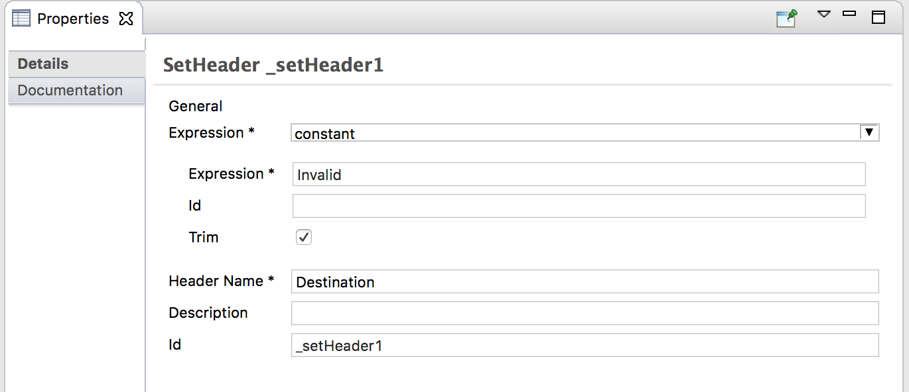In the Expression field, enter
InvalidOrders.In the Header Name field, enter
Destination.Leave each of the remaining properties as is.
In the Palette, open the Components drawer and select the (
 ) component.
) component.Drag the component to the canvas and drop it in the When_when1 container.
The When_when1 container expands to accommodate the To_to1 node.
On the canvas, select the SetHeader_setHeader1 node and drag its connector arrow over the To_to1 node, and then release it:
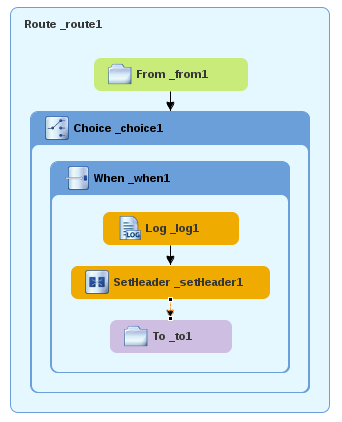On the canvas, select the To_to1 node to open its properties in the Properties editor:
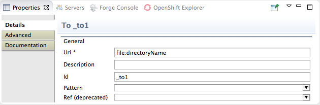On the Details tab, replace
directoryNamewithtarget/messages/invalidOrdersin the Uri field, and enter_Invalidin the Id field: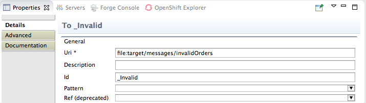On the menu bar, click > to save the routing context file.
Click the Source tab to view the routing context in Source view:
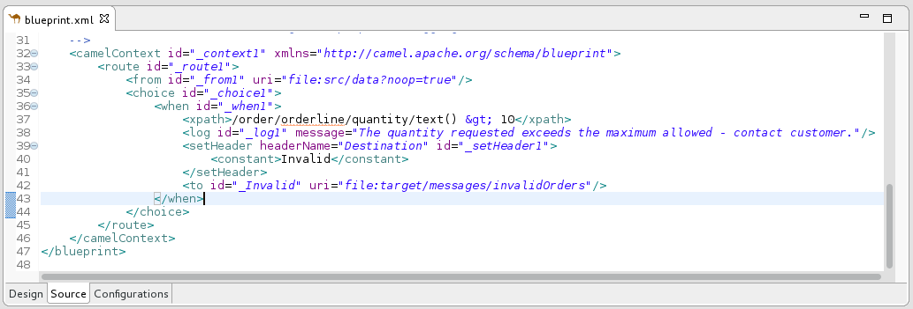
To add and configure the otherwise branch of your route:
In the Palette, open the Routing drawer and select the (
) pattern.Drag the pattern to the canvas and drop it into the Choice_choice1 container:
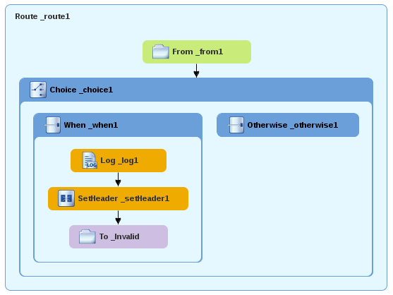The Choice_choice1 container expands to accommodate the node.
On the canvas, select the Otherwise_otherwise1 node to open its properties in the Properties.
In the Id field, enter
_else2: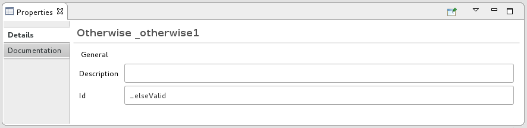Note The else2 node will eventually route to the terminal file: node (
file:target/messages/validOrders) any message that does not match the XPath expression set for the When_when1 node.In the Palette, open the Components drawer and select the (
) component.Drag the component to the canvas and drop it on the Otherwise_else2 node:
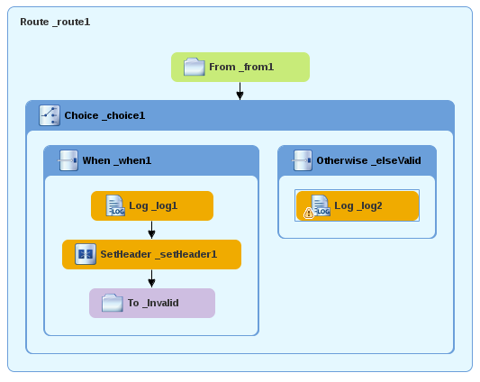The Otherwise-else2 container expands to accommodate the node.
On the canvas, select the node to open its properties in the Properties editor.
In the Message field, enter
valid order - process: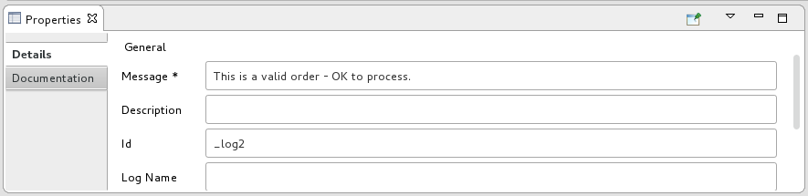Leave each of the remaining properties as is.
In the Palette, open the Transformation drawer and select the pattern.
Drag the pattern to the canvas and drop it into the Otherwise_else2 container.
The Otherwise_else2 container expands to accommodate the node.
On the canvas, select the Log_log2 node and drag its connector arrow over the SetHeader_setHeader2 node, and then release it:
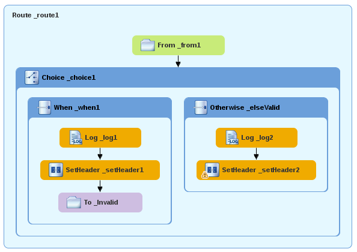Note You can collapse containers to free up space when the diagram becomes congested. To do so, select the container you want to collapse, and then click its
 button: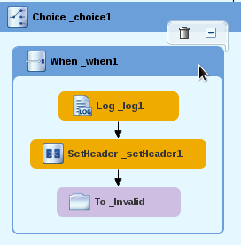
button: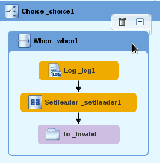To reopen the container, select it and then click its
 button: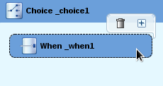
button: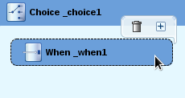Collapsing and expanding containers in Design view does not affect the routing context file. It remains unchanged.
On the canvas, select the node to open its properties in the Properties editor.
Click the
button in the Language field to open
the list of available languages, and select
: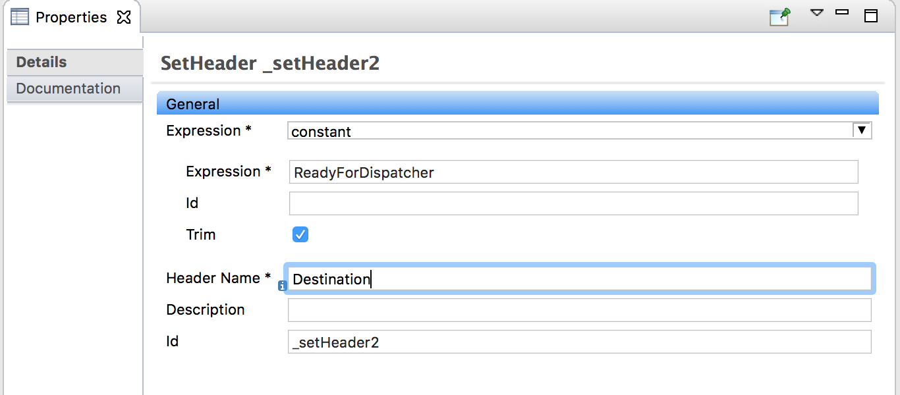In the Expression field, enter
Dispatcher.In the Header Name field, enter
Destination.Leave each of the remaining properties as is.
In the Palette, open the Components drawer and select the (
) component.Drag the component to the canvas and drop it into the Otherwise_else2 container.
The Otherwise_else2 container expands to accommodate the node.
On the canvas, select the node, and drag its connector arrow over the node and then release it:
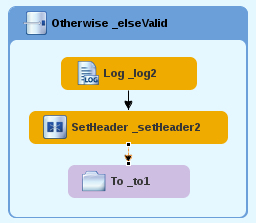On the canvas, select the node to open its properties in the Properties editor.
In the URI field, replace
directoryNamewithtarget/messages/validOrders, and in the Id field, enter_Valid: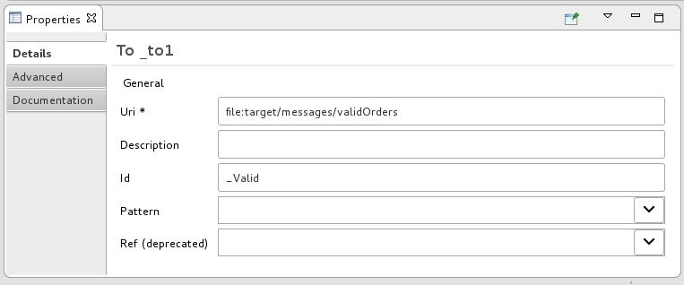On the menu bar, click > to save the routing context file.
This is the completed content-based router with logs and message headers:
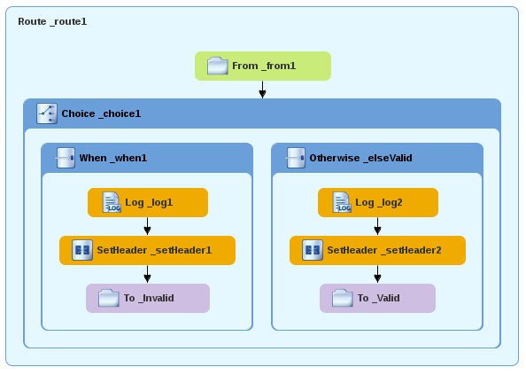Click the Source tab at the bottom, left of the canvas to display the XML for the route.
The
camelContextelement will look like that shown in Example 3.Example 3. XML for content-based router
<?xml version="1.0" encoding="UTF-8"?> <blueprint xmlns="http://www.osgi.org/xmlns/blueprint/v1.0.0" xmlns:xsi="http://www.w3.org/2001/XMLSchema-instance" xsi:schemaLocation="http://www.osgi.org/xmlns/blueprint/v1.0.0 https://www.osgi.org/xmlns/blueprint/v1.0.0/blueprint.xsd http://camel.apache.org/schema/blueprint http://camel.apache.org/schema/blueprint/camel-blueprint.xsd"> <camelContext id="_context1" xmlns="http://camel.apache.org/schema/blueprint"> <route id="_route1"> <from id="_from1" uri="file:src/data?noop=true"/> <choice id="_choice1"> <when id="_when1"> <xpath>order/orderline/quantity/text() > /order/orderline/maxAllowed/text()</xpath> <log id="_log1" message="quantity requested exceeds the maximum allowed - contact customer"/> <setHeader headerName="Destination" id="_setHeader1"> <constant>InvalidOrders</constant> </setHeader> <to id="_Invalid" uri="file:target/messages/invalidOrders"/> </when> <otherwise id="_else2"> <log id="_log2" message="valid order - process"/> <setHeader headerName="Destination" id="_setHeader2"> <constant>Dispatcher</constant> </setHeader> <to id="_Valid" uri="file:target/messages/validOrders"/> </otherwise> </choice> </route> </camelContext> </blueprint>
You can run the new route as described in Running the route.
After you run it, you can easily verify whether the route executed properly by checking the target destinations in Project Explorer:
Select
CBRroute.Right-click it to open the context menu, then select .
Under the project root node (CBRroute), locate the folder
target/messages/and expand it.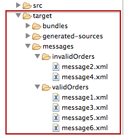Check that the
target/messages/invalidOrdersfolder containsmessage2.xmlandmessage4.xml.In these messages, the value of the quantity element should exceed the value of the maxAllowed element.
Check that the
target/messages/validOrdersfolder contains the four message files that contain valid orders:message1.xml,message3.xml,message5.xmlandmessage6.xml.In these messages, the value of the quantity element should be less than or equal to the value of the maxAllowed element.
Note To view message content, double-click each message to open it in the route editor's XML editor.
To learn more about message enrichment see: